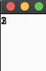
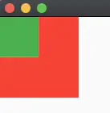
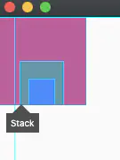
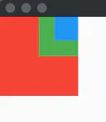
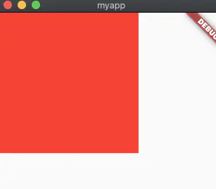
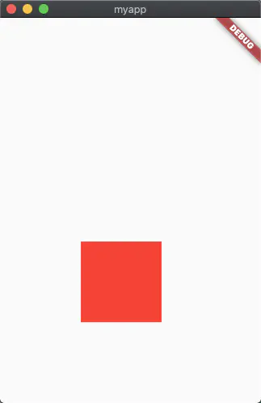

<!DOCTYPE html>
<html lang="en">

<head><meta name="generator" content="Hexo 3.9.0">
  <meta charset="utf-8">
    
  <meta name="viewport" content="width=device-width, initial-scale=1, maximum-scale=1">
  <title>
    flutter--Stack &amp; Positioned 层叠布局 |  MonkeyInWind
  </title>
  
  <link rel="shortcut icon" href="/favicon.ico">
  
  <link rel="stylesheet" href="/css/style.css">
  <script src="/js/pace.min.js"></script>

  

<script type="text/javascript">
(function(i,s,o,g,r,a,m){i['GoogleAnalyticsObject']=r;i[r]=i[r]||function(){
(i[r].q=i[r].q||[]).push(arguments)},i[r].l=1*new Date();a=s.createElement(o),
m=s.getElementsByTagName(o)[0];a.async=1;a.src=g;m.parentNode.insertBefore(a,m)
})(window,document,'script','//www.google-analytics.com/analytics.js','ga');

ga('create', 'UA-155359064-1', 'auto');
ga('send', 'pageview');

</script>


  

</head>

</html>

<body>
  <div id="app">
    <main class="content">
      <section class="outer">
  <article id="post-flutterStackPositioned" class="article article-type-post" itemscope
  itemprop="blogPost" data-scroll-reveal>

  <div class="article-inner">
    
    <header class="article-header">
       
<h1 class="article-title sea-center" style="border-left:0" itemprop="name">
  flutter--Stack &amp; Positioned 层叠布局
</h1>
  

    </header>
    

    
    <div class="article-meta">
      <a href="/post/flutterStackPositioned/" class="article-date">
  <time datetime="2020-02-03T12:06:01.000Z" itemprop="datePublished">2020-02-03</time>
</a>
      
    </div>
    

    
    
    <div class="tocbot"></div>


    

    <div class="article-entry" itemprop="articleBody">
      


      

      
      <p><code>Stack</code>在<a href="/post/flutterDemoMockLogin">flutter–模拟登录</a>中出现过，这里来详细了解一下这个<code>Widget</code>，类似于<code>css</code>中的<code>position: relative</code>，但是会强制子<code>Widget</code>层叠显示，<code>Positioned</code>类似于<code>css</code>中的<code>position: absolute</code>，可以设置坐标。</p>
<a id="more"></a>
<h2 id="Stack"><a href="#Stack" class="headerlink" title="Stack"></a>Stack</h2><figure class="highlight plain"><table><tr><td class="gutter"><pre><span class="line">1</span><br><span class="line">2</span><br><span class="line">3</span><br><span class="line">4</span><br><span class="line">5</span><br><span class="line">6</span><br><span class="line">7</span><br><span class="line">8</span><br></pre></td><td class="code"><pre><span class="line">Stack(&#123;</span><br><span class="line">    Key key,</span><br><span class="line">    AlignmentGeometry alignment: AlignmentDirectional.topStart,</span><br><span class="line">    TextDirection textDirection,</span><br><span class="line">    StackFit fit: StackFit.loose,</span><br><span class="line">    Overflow overflow: Overflow.clip,</span><br><span class="line">    List&lt;Widget&gt; children: const[]</span><br><span class="line">&#125;)</span><br></pre></td></tr></table></figure>

<p>先看一个只有<code>children</code>的demo</p>
<figure class="highlight plain"><table><tr><td class="gutter"><pre><span class="line">1</span><br><span class="line">2</span><br><span class="line">3</span><br><span class="line">4</span><br><span class="line">5</span><br><span class="line">6</span><br><span class="line">7</span><br><span class="line">8</span><br><span class="line">9</span><br><span class="line">10</span><br><span class="line">11</span><br><span class="line">12</span><br><span class="line">13</span><br><span class="line">14</span><br><span class="line">15</span><br><span class="line">16</span><br><span class="line">17</span><br><span class="line">18</span><br><span class="line">19</span><br><span class="line">20</span><br><span class="line">21</span><br></pre></td><td class="code"><pre><span class="line">import &apos;package:flutter/material.dart&apos;;</span><br><span class="line"></span><br><span class="line">void main() =&gt; runApp(MyApp());</span><br><span class="line"></span><br><span class="line">class MyApp extends StatelessWidget &#123;</span><br><span class="line">  // This widget is the root of your application.</span><br><span class="line">  @override</span><br><span class="line">  Widget build(BuildContext context) &#123;</span><br><span class="line">    return new MaterialApp(</span><br><span class="line">      home: Scaffold(</span><br><span class="line">        body: Stack(</span><br><span class="line">          children: &lt;Widget&gt;[</span><br><span class="line">            Text(&apos;1&apos;),</span><br><span class="line">            Text(&apos;2&apos;),</span><br><span class="line">            Text(&apos;3&apos;)</span><br><span class="line">          ],</span><br><span class="line">        )</span><br><span class="line">      )</span><br><span class="line">    );</span><br><span class="line">  &#125;</span><br><span class="line">&#125;</span><br></pre></td></tr></table></figure>

<p><br>1、2、3叠在了一起，哪一个在上哪一个在下，把<code>Text</code>换成<code>Container</code>再看一下，</p>
<figure class="highlight plain"><table><tr><td class="gutter"><pre><span class="line">1</span><br><span class="line">2</span><br><span class="line">3</span><br><span class="line">4</span><br><span class="line">5</span><br><span class="line">6</span><br><span class="line">7</span><br><span class="line">8</span><br><span class="line">9</span><br><span class="line">10</span><br><span class="line">11</span><br><span class="line">12</span><br><span class="line">13</span><br><span class="line">14</span><br><span class="line">15</span><br><span class="line">16</span><br><span class="line">17</span><br><span class="line">18</span><br><span class="line">19</span><br><span class="line">20</span><br><span class="line">21</span><br><span class="line">22</span><br><span class="line">23</span><br><span class="line">24</span><br><span class="line">25</span><br><span class="line">26</span><br><span class="line">27</span><br><span class="line">28</span><br></pre></td><td class="code"><pre><span class="line">import &apos;package:flutter/material.dart&apos;;</span><br><span class="line"></span><br><span class="line">void main() =&gt; runApp(MyApp());</span><br><span class="line"></span><br><span class="line">class MyApp extends StatelessWidget &#123;</span><br><span class="line">  // This widget is the root of your application.</span><br><span class="line">  @override</span><br><span class="line">  Widget build(BuildContext context) &#123;</span><br><span class="line">    return new MaterialApp(</span><br><span class="line">      home: Scaffold(</span><br><span class="line">        body: Stack(</span><br><span class="line">          children: &lt;Widget&gt;[</span><br><span class="line">            Container(</span><br><span class="line">              width: 100,</span><br><span class="line">              height: 100,</span><br><span class="line">              color: Colors.red</span><br><span class="line">            ),</span><br><span class="line">            Container(</span><br><span class="line">              width: 50,</span><br><span class="line">              height: 50,</span><br><span class="line">              color: Colors.green</span><br><span class="line">            )</span><br><span class="line">          ],</span><br><span class="line">        )</span><br><span class="line">      )</span><br><span class="line">    );</span><br><span class="line">  &#125;</span><br><span class="line">&#125;</span><br></pre></td></tr></table></figure>

<p><br>可以看见和<code>css</code>里一样，后写的在上。  </p>
<h3 id="alignment"><a href="#alignment" class="headerlink" title="alignment"></a>alignment</h3><p>子<code>Widget</code>的对齐方式<br><code>AlignmentDirectional.topStart</code> (默认值)、<code>AlignmentDirectional.topCenter</code>、<code>AlignmentDirectional.topEnd</code>、<code>AlignmentDirectional.centerStart</code>、<code>AlignmentDirectional.center</code>、<code>AlignmentDirectional.centerEnd</code>、<code>AlignmentDirectional.bottomStart</code>、<code>AlignmentDirectional.bottomCenter</code>、<code>AlignmentDirectional.bottomEnd</code>。<br>简单易懂，看个demo。</p>
<figure class="highlight plain"><table><tr><td class="gutter"><pre><span class="line">1</span><br><span class="line">2</span><br><span class="line">3</span><br><span class="line">4</span><br><span class="line">5</span><br><span class="line">6</span><br><span class="line">7</span><br><span class="line">8</span><br><span class="line">9</span><br><span class="line">10</span><br><span class="line">11</span><br><span class="line">12</span><br><span class="line">13</span><br><span class="line">14</span><br><span class="line">15</span><br><span class="line">16</span><br><span class="line">17</span><br><span class="line">18</span><br><span class="line">19</span><br><span class="line">20</span><br><span class="line">21</span><br><span class="line">22</span><br><span class="line">23</span><br><span class="line">24</span><br><span class="line">25</span><br><span class="line">26</span><br><span class="line">27</span><br><span class="line">28</span><br><span class="line">29</span><br><span class="line">30</span><br><span class="line">31</span><br><span class="line">32</span><br><span class="line">33</span><br><span class="line">34</span><br></pre></td><td class="code"><pre><span class="line">import &apos;package:flutter/material.dart&apos;;</span><br><span class="line"></span><br><span class="line">void main() =&gt; runApp(MyApp());</span><br><span class="line"></span><br><span class="line">class MyApp extends StatelessWidget &#123;</span><br><span class="line">  // This widget is the root of your application.</span><br><span class="line">  @override</span><br><span class="line">  Widget build(BuildContext context) &#123;</span><br><span class="line">    return new MaterialApp(</span><br><span class="line">      home: Scaffold(</span><br><span class="line">        body: Stack(</span><br><span class="line">          alignment: AlignmentDirectional.bottomCenter,</span><br><span class="line">          children: &lt;Widget&gt;[</span><br><span class="line">            Container(</span><br><span class="line">              width: 100,</span><br><span class="line">              height: 100,</span><br><span class="line">              color: Colors.red</span><br><span class="line">            ),</span><br><span class="line">            Container(</span><br><span class="line">              width: 50,</span><br><span class="line">              height: 50,</span><br><span class="line">              color: Colors.green</span><br><span class="line">            ),</span><br><span class="line">            Container(</span><br><span class="line">              width: 30,</span><br><span class="line">              height: 30,</span><br><span class="line">              color: Colors.blue</span><br><span class="line">            )</span><br><span class="line">          ],</span><br><span class="line">        )</span><br><span class="line">      )</span><br><span class="line">    );</span><br><span class="line">  &#125;</span><br><span class="line">&#125;</span><br></pre></td></tr></table></figure>

<p></p>
<h3 id="textDirection"><a href="#textDirection" class="headerlink" title="textDirection"></a>textDirection</h3><p>子<code>Widget</code>的排列方式，默认值是<code>TextDirection.ltr</code>，从左往右，当设置为<code>TextDirection.rtl</code>时效果如下：</p>
<p></p>
<h3 id="fit"><a href="#fit" class="headerlink" title="fit"></a>fit</h3><p>子<code>Widget</code>中未定位元素的大小，只有两个值：<br><code>StackFit.loose</code>：不对其大小进行约束(默认值)<br><code>StackFit.expand</code>：最大<br><code>StackFit.passthrough</code>：父级的约束直接传递给子<code>Widgert</code></p>
<figure class="highlight plain"><table><tr><td class="gutter"><pre><span class="line">1</span><br><span class="line">2</span><br><span class="line">3</span><br><span class="line">4</span><br><span class="line">5</span><br><span class="line">6</span><br><span class="line">7</span><br><span class="line">8</span><br><span class="line">9</span><br><span class="line">10</span><br><span class="line">11</span><br><span class="line">12</span><br><span class="line">13</span><br><span class="line">14</span><br><span class="line">15</span><br><span class="line">16</span><br><span class="line">17</span><br><span class="line">18</span><br><span class="line">19</span><br><span class="line">20</span><br><span class="line">21</span><br><span class="line">22</span><br><span class="line">23</span><br><span class="line">24</span><br><span class="line">25</span><br><span class="line">26</span><br><span class="line">27</span><br><span class="line">28</span><br></pre></td><td class="code"><pre><span class="line">import &apos;package:flutter/material.dart&apos;;</span><br><span class="line"></span><br><span class="line">void main() =&gt; runApp(MyApp());</span><br><span class="line"></span><br><span class="line">class MyApp extends StatelessWidget &#123;</span><br><span class="line">  // This widget is the root of your application.</span><br><span class="line">  @override</span><br><span class="line">  Widget build(BuildContext context) &#123;</span><br><span class="line">    return new MaterialApp(</span><br><span class="line">      home: Scaffold(</span><br><span class="line">        body: Container(</span><br><span class="line">          width: 200,</span><br><span class="line">          height: 200,</span><br><span class="line">          child: Stack(</span><br><span class="line">            fit: StackFit.passthrough,</span><br><span class="line">            children: &lt;Widget&gt;[</span><br><span class="line">              Container(</span><br><span class="line">                width: 50,</span><br><span class="line">                height: 50,</span><br><span class="line">                color: Colors.red</span><br><span class="line">              )</span><br><span class="line">            ],</span><br><span class="line">          )</span><br><span class="line">        )</span><br><span class="line">      )</span><br><span class="line">    );</span><br><span class="line">  &#125;</span><br><span class="line">&#125;</span><br></pre></td></tr></table></figure>

<p><br>这里需要注意的是<code>fit</code>值如果不是默认值<code>StackFit.loose</code>，子<code>Widget</code>设置的尺寸将失去作用。</p>
<h3 id="overflow"><a href="#overflow" class="headerlink" title="overflow"></a>overflow</h3><p>和<code>css</code>里效果一样，只有两个值<br><code>Overflow.clip</code>：溢出将被剪切<br><code>Overflow.visible</code>：不对溢出的部分做处理</p>
<h2 id="Positioned"><a href="#Positioned" class="headerlink" title="Positioned"></a>Positioned</h2><p>定位元素，用于<code>Stack</code>的子<code>Widget</code></p>
<figure class="highlight plain"><table><tr><td class="gutter"><pre><span class="line">1</span><br><span class="line">2</span><br><span class="line">3</span><br><span class="line">4</span><br><span class="line">5</span><br><span class="line">6</span><br><span class="line">7</span><br><span class="line">8</span><br><span class="line">9</span><br><span class="line">10</span><br></pre></td><td class="code"><pre><span class="line">Positioned(&#123;</span><br><span class="line">    Key key,</span><br><span class="line">    double left,</span><br><span class="line">    double top,</span><br><span class="line">    double right,</span><br><span class="line">    double bottom,</span><br><span class="line">    double width,</span><br><span class="line">    double height,</span><br><span class="line">    @required Widget child</span><br><span class="line">&#125;)</span><br></pre></td></tr></table></figure>

<p>都是基础属性，<code>left</code>、<code>top</code>、<code>right</code>、<code>bottom</code>是相对于父级的坐标。</p>
<figure class="highlight plain"><table><tr><td class="gutter"><pre><span class="line">1</span><br><span class="line">2</span><br><span class="line">3</span><br><span class="line">4</span><br><span class="line">5</span><br><span class="line">6</span><br><span class="line">7</span><br><span class="line">8</span><br><span class="line">9</span><br><span class="line">10</span><br><span class="line">11</span><br><span class="line">12</span><br><span class="line">13</span><br><span class="line">14</span><br><span class="line">15</span><br><span class="line">16</span><br><span class="line">17</span><br><span class="line">18</span><br><span class="line">19</span><br><span class="line">20</span><br><span class="line">21</span><br><span class="line">22</span><br><span class="line">23</span><br><span class="line">24</span><br><span class="line">25</span><br><span class="line">26</span><br><span class="line">27</span><br></pre></td><td class="code"><pre><span class="line">import &apos;package:flutter/material.dart&apos;;</span><br><span class="line"></span><br><span class="line">void main() =&gt; runApp(MyApp());</span><br><span class="line"></span><br><span class="line">class MyApp extends StatelessWidget &#123;</span><br><span class="line">  // This widget is the root of your application.</span><br><span class="line">  @override</span><br><span class="line">  Widget build(BuildContext context) &#123;</span><br><span class="line">    return new MaterialApp(</span><br><span class="line">      home: Scaffold(</span><br><span class="line">        body: Stack(</span><br><span class="line">          children: &lt;Widget&gt;[</span><br><span class="line">            Positioned(</span><br><span class="line">              width: 100,</span><br><span class="line">              height: 100,</span><br><span class="line">              left: 100,</span><br><span class="line">              bottom: 100,</span><br><span class="line">              child: Container(</span><br><span class="line">                color: Colors.red</span><br><span class="line">              )</span><br><span class="line">            )</span><br><span class="line">          ],</span><br><span class="line">        )</span><br><span class="line">      )</span><br><span class="line">    );</span><br><span class="line">  &#125;</span><br><span class="line">&#125;</span><br></pre></td></tr></table></figure>

<p><br>相对于左下角的距离是100、100.</p>

      
      <!-- 打赏 -->
      
    </div>
    <footer class="article-footer">
      <!-- 
      <a data-url="http://yoursite.com/post/flutterStackPositioned/" data-id="ck66f0pim000c65hsjc2lldks"
        class="article-share-link">分享</a>
      
       -->
    </footer>

  </div>

  
  
  <nav class="article-nav">
    
    
      <a href="/post/flutterRowFlow/" class="article-nav-link">
        <strong class="article-nav-caption">下一篇</strong>
        <div class="article-nav-title">flutter--Wrap &amp; Flow流式布局</div>
      </a>
    
  </nav>


  

  
  
<!-- valine评论 -->
<div id="vcomments-box">
    <div id="vcomments">
    </div>
</div>
<script src="//cdn1.lncld.net/static/js/3.0.4/av-min.js"></script>
<script src='https://cdn.jsdelivr.net/npm/valine@1.3.10/dist/Valine.min.js'></script>
<script>
    new Valine({
        el: '#vcomments',
        notify: false,
        verify: false,
        app_id: '',
        app_key: '',
        path: window.location.pathname,
        avatar: 'mp',
        placeholder: '给我的文章加点评论吧~',
        recordIP: true
    });
    const infoEle = document.querySelector('#vcomments .info');
    if (infoEle && infoEle.childNodes && infoEle.childNodes.length > 0) {
        infoEle.childNodes.forEach(function (item) {
            item.parentNode.removeChild(item);
        });
    }
</script>
<style>
    #vcomments-box {
        padding: 5px 30px;
    }

    @media screen and (max-width: 800px) {
        #vcomments-box {
            padding: 5px 0px;
        }
    }

    #vcomments-box #vcomments {
        background-color: #fff;
    }

    .v .vlist .vcard .vh {
        padding-right: 20px;
    }

    .v .vlist .vcard {
        padding-left: 10px;
    }
</style>

  

  
  
  

</article>

</section>
      <footer class="footer">
  <div class="outer">
    <ul class="list-inline">
      <li>
        &copy;
        2020-02
        MonkeyInWind
      </li>
      <li>
        <!--
        
          Power by
        
        
        <a href="https://hexo.io" target="_blank">Hexo</a> Theme <a href="https://github.com/Shen-Yu/hexo-theme-ayer" target="_blank">Ayer</a>
        
        -->
        <a target="_blank" href='https://github.com/MonkeyInWind'>GitHub</a>
      </li>
    </ul>
    <ul class="list-inline">
      <li>
        
      </li>
      <li>
        <!-- cnzz统计 -->
        
      </li>
    </ul>
  </div>
</footer>

    <div class="to_top">
        <div class="totop" id="totop">
  <i class="ri-arrow-up-line"></i>
</div>
      </div>
    </main>
    
    <aside class="sidebar">
      
        <button class="navbar-toggle"></button>
<nav class="navbar">
  
  <div class="logo">
    <a href="/"></a>
  </div>
  
  <ul class="nav nav-main">
    
    <li class="nav-item">
      <a class="nav-item-link" href="/">主页</a>
    </li>
    
    <li class="nav-item">
      <a class="nav-item-link" href="/archives">目录</a>
    </li>
    
    <li class="nav-item">
      <a class="nav-item-link" href="/Categories">分类</a>
    </li>
    
    <li class="nav-item">
      <a class="nav-item-link" href="/About">关于我</a>
    </li>
    
  </ul>
</nav>
<nav class="navbar navbar-bottom">
  <ul class="nav">
    <li class="nav-item">
      
      <a class="nav-item-link nav-item-search"  title="Search">
        <i class="ri-search-line"></i>
      </a>
      
      
    </li>
  </ul>
</nav>
<div class="search-form-wrap">
  <div class="local-search local-search-plugin">
  <input type="search" id="local-search-input" class="local-search-input" placeholder="Search...">
  <div id="local-search-result" class="local-search-result"></div>
</div>
</div>
      </aside>
      <div id="mask"></div>

<!-- #reward -->
<div id="reward">
  <span class="close"><i class="ri-close-line"></i></span>
  <p class="reward-p"><i class="ri-cup-line"></i>请我喝杯咖啡吧~</p>
  <div class="reward-box">
    
    
  </div>
</div>
      <script src="/js/jquery-2.0.3.min.js"></script>
<script src="/js/jquery.justifiedGallery.min.js"></script>
<script src="/js/lazyload.min.js"></script>
<script src="/js/busuanzi-2.3.pure.min.js"></script>

  <script src="/fancybox/jquery.fancybox.min.js"></script>


  <script src="/js/tocbot.min.js"></script>
  <script>
    // Tocbot_v4.7.0  http://tscanlin.github.io/tocbot/
    tocbot.init({
      tocSelector: '.tocbot',
      contentSelector: '.article-entry',
      headingSelector: 'h1, h2, h3, h4, h5, h6',
      hasInnerContainers: true,
      scrollSmooth: true,
      positionFixedSelector: '.tocbot',
      positionFixedClass: 'is-position-fixed',
      fixedSidebarOffset: 'auto',
    });
  </script>


<script>
  var ayerConfig = {
    mathjax: false
  }
</script>

<script src="/js/ayer.js"></script>

<script src="https://cdn.jsdelivr.net/npm/jquery-modal@0.9.2/jquery.modal.min.js"></script>
<link rel="stylesheet" href="https://cdn.jsdelivr.net/npm/jquery-modal@0.9.2/jquery.modal.min.css">


<script type="text/javascript" src="https://js.users.51.la/20544303.js"></script>
  
  
  </div>
</body>

</html>